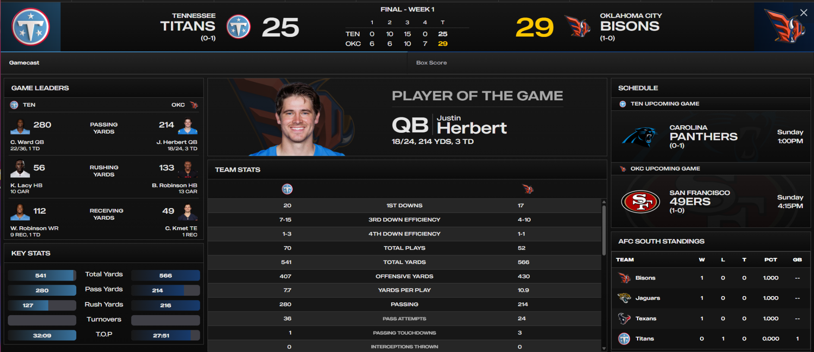

OKLAHOMA CITY BISONS
OKLAHOMA CITY BISONSHerbert throws three touchdowns as the Bisons win their opener
By Daniel Mercer · Fictional ESPN NFL coverage · Week 1, 2027

OKLAHOMA CITY — The first regular-season game under the Bisons banner came down to the fourth quarter. Oklahoma City led 12–10 at halftime, trailed 25–22 after three and scored the only seven points of the final period to beat Tennessee 29–25.
Justin Herbert earned player of the game with three touchdown passes on 18-of-24 passing for 214 yards and zero interceptions. Tank Dell caught two of those touchdowns on a day when his four receptions went for just 16 yards. Chase Brown caught the other and added 78 rushing yards on 10 carries.
Room for both backs
Bijan Robinson opened with 133 rushing yards on 13 carries and added 49 receiving yards, finishing with 182 yards from scrimmage. Brown added 104. Together, the two backs accounted for 211 of Oklahoma City’s 216 rushing yards. Cole Kmet matched Robinson’s 49 receiving yards on one catch, the Bisons’ longest completion.
Tennessee had its chances
Cam Ward threw for 280 yards, including 112 to Wan’Dale Robinson. The Titans ran 70 plays to Oklahoma City’s 52 and converted seven of 15 third downs. The Bisons countered with four sacks, led by JT Tuimoloau’s 1.5, and held Tennessee scoreless in the fourth. Rookie Will Heldt recorded a sack and fellow rookie Tony Rojas made five tackles.
The opener also gave Oklahoma City something to clean up before traveling to San Francisco. Spencer Shrader made his only field goal but missed two extra points, small margins in a game decided by four. The Bisons visit the 49ers next Sunday at 4:15 PM as displayed in Madden.